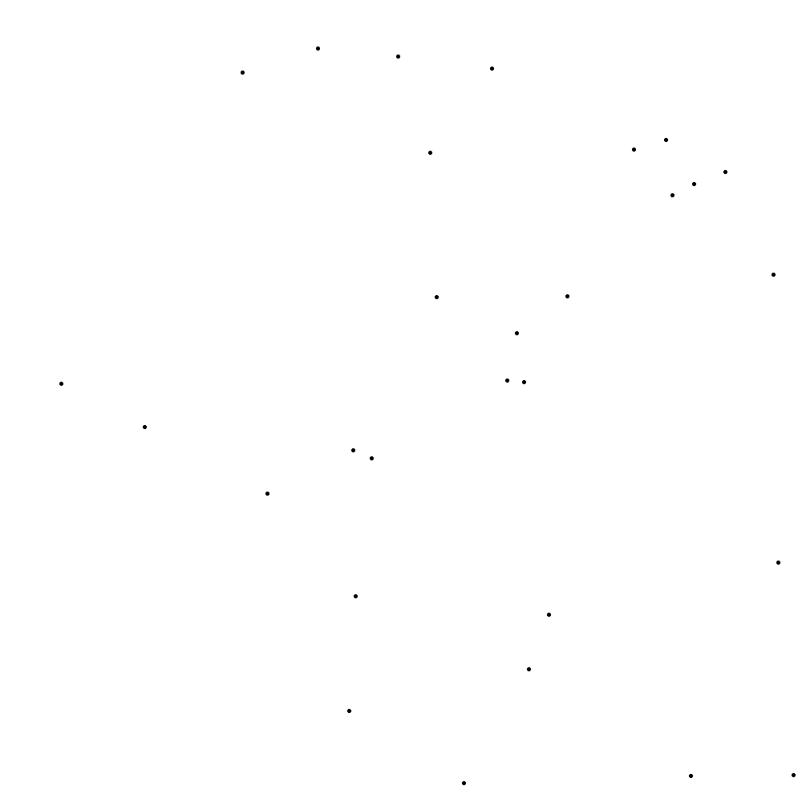
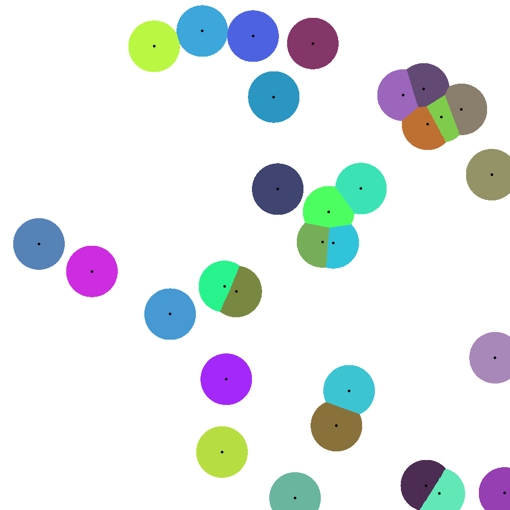
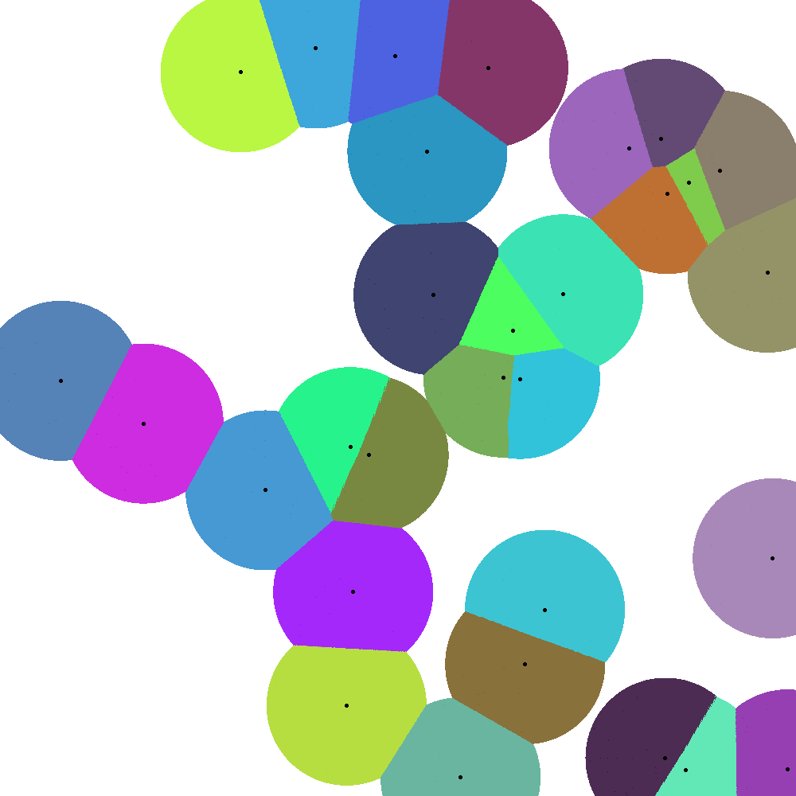
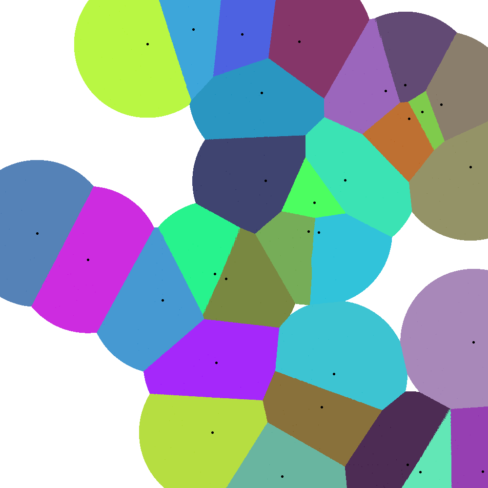
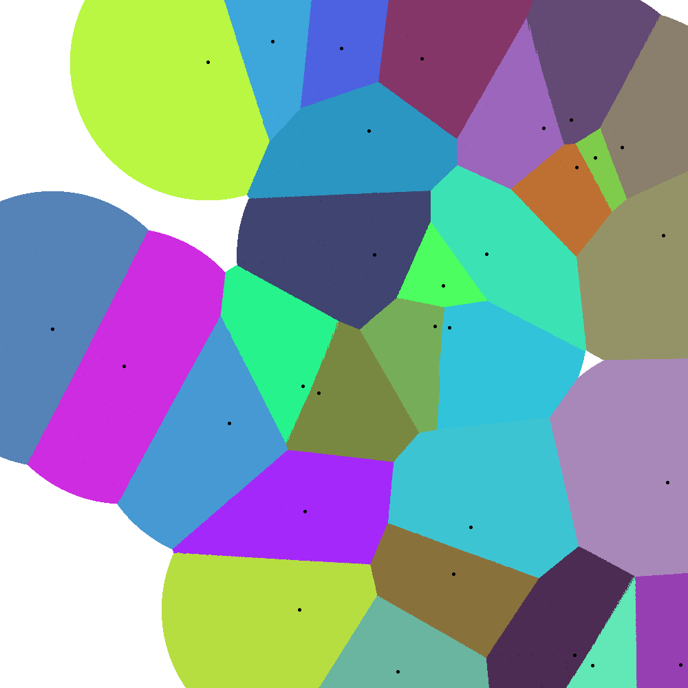
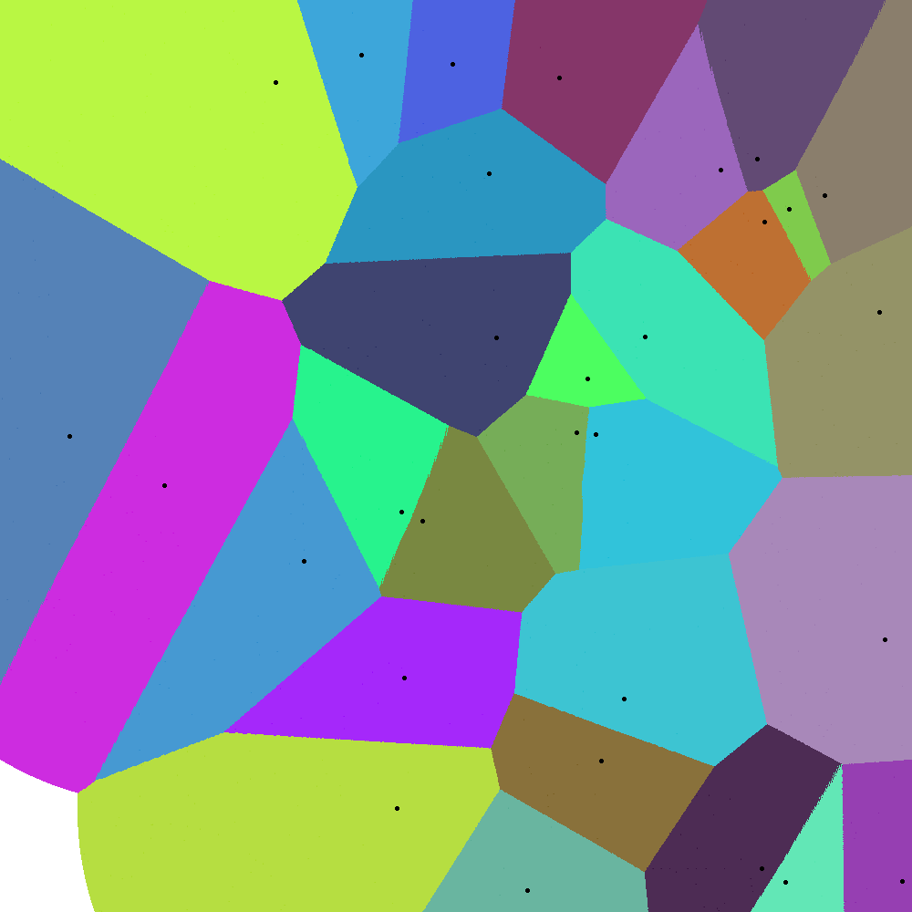
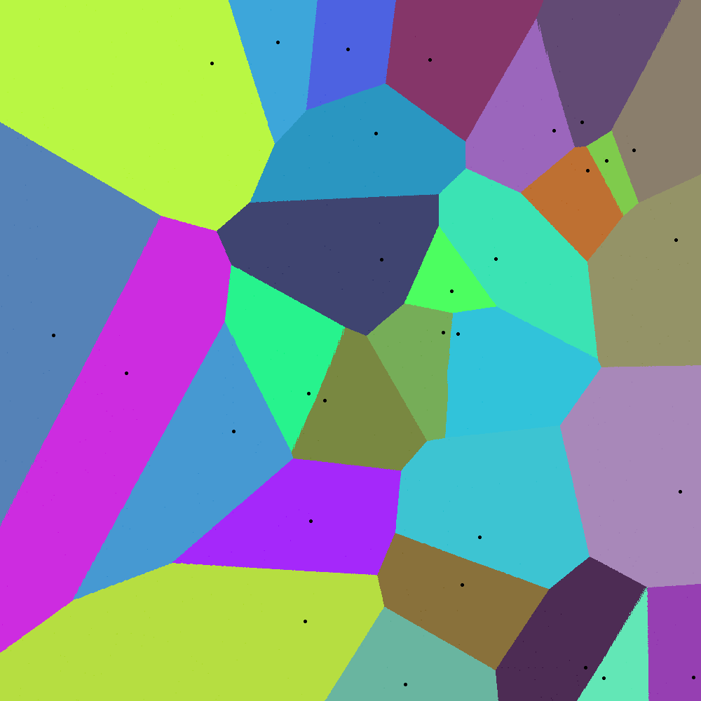
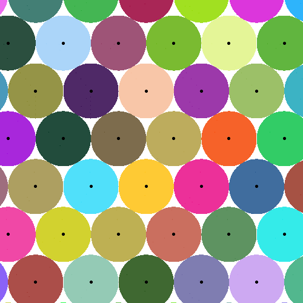
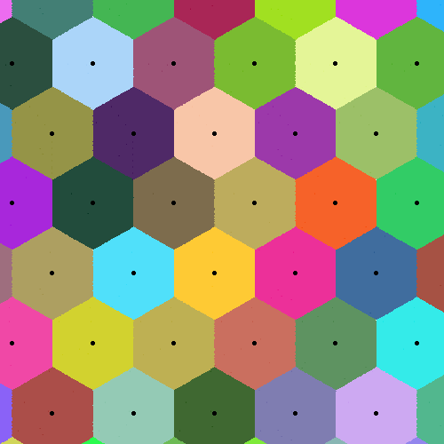

Troisième partie : Diagramme de Voronoï
Le but de cette troisième partie est d'approximer le diagramme de Voronoï d'un ensemble de points donnés.
Afin d'illustrer par des exemples le lien entre l'empilement compact et la conjecture du nid d'abeille.
Ou encore du lien être les empilements et le pavage du plan.
Pour cela, nous avons implémenté un algorithme qui, pour un ensemble de points donnés, approximera son
diagramme de Voronoï. L'algorithme fonctionne sur le principe suivant : nous partons d'un ensemble de
points, et, pour chaque point, nous allons faire gonfler un disque centré en ce point. Si deux disques
se rencontrent, nous les feront s'écraser l'un contre l'autre. Voir le schéma suivant.







On comprend bien que chaque zone colorée contient désormais l'ensemble des points qui sont les
plus proches du point d'origine de cette zone. En faisant gonfler les cercles et en les empêchant
de se superposer, les points de la couleur du disque gonflé seront les plus proches du centre de
ce disque (car la boule unité de la norme euclidienne est un cercle). On comprend bien que dès
qu'un point blanc sera atteint par un disque D, il sera plus proche du centre D que des centres voisins.
%plus introduire ce qu'est D et le point blanc ?
%choisir un et bien l'expliquer, mettre le reste en annexe ?
Nous allons maintenant présenter les résultats des diagrammes obtenus, ils sont surtout intéressant
visuellement. Ils permettent de conforter l'intuition que nous avons sur le sujet global des empilements
compacts liés à l'aspect du pavage du plan. Pour illustrer l'empilement compact, nous allons voir
l'exemple des hexagones. On peut voir les hexagones se tracer distinctement à partir de la troisième
étape, et finir avec un empilement compact d'hexagones.


Il est cependant possible de paver l'espace avec d'autres formes géométriques grâce à cet algorithme.
Par exemple, faire des altérations compacte du graphe, ou même simplement paver l'espace avec des carrés.
\cite{Voronoi}